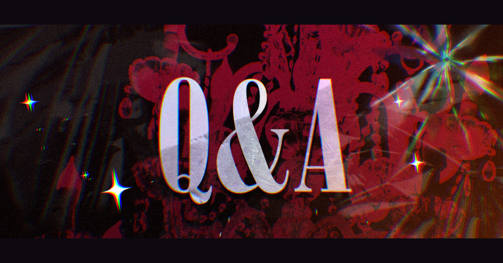

Nobody's Law-概要

可能事項
- 3L
- うちよそ・うちうち
- 任意ロスト
- ファンタジー配色
- 事前関係
- 文字CS・鍵垢での参加
- X以外の媒体での使用 世界観の出自元として当運営アカウントのIDを記載していただければ、企画の世界観を利用した創作物をポートフォリオ等へ掲載していただいて問題ございません。 ただし、うちよそ等、他の参加者様と共同で制作した作品を外部へ掲載する場合は、必ずお相手の方へ確認を取るようお願いいたします。
- 運営から公開された画像の使用 企画内で公開している画像につきましては、世界観の出自元として当運営アカウントのIDを記載していただければ、世界観の紹介・説明等の目的で使用していただいて問題ございません。 ただし、画像そのものを自作の素材として加工・配布するなど、元の用途を大きく逸脱する使用についてはご遠慮ください。
- 過度な露出度のキャラクター作成 ただし、過度な露出を含む場合は、センシティブ設定や別サイトを経由するなど、閲覧者へのワンクッション配慮をお願いします。
禁止事項
- 18歳未満の参加
- 公式壁打ちでのR18表現 性的な内容を含むツイートは、別途R18専用壁打ちをお使いください。
- 事前交流 参加前に、キャラクター同士で会話を行うこと 関係性を作るために、DM等で「キャラクターとして」やり取りすること 判断に迷う場合は、原則としてしないようお願いいたします。
- 未撤退キャラクターの転用
- 最強・最弱・唯一設定
- AI生成やメーカーの使用/外部への立ち絵制作依頼
- 金銭のやり取りが発生する行為 グッズ作成などにおきましては、必ず利益が発生しないようお願いいたします。
キャラクター作成詳細
共通作成ルール
- 70歳以下
- キャラクターの作成数に上限なし
マフィア
都市の各区域に根を張り、裏社会を支配する存在。 縄張りや利権、武器、情報、人間など、あらゆるものを巡って互いに争い、時に手を組み、時に裏切る。 組織ごとに異なる思想や文化、勢力関係を持ち、抗争や取引を繰り返しながら勢力を拡大している。 幹部や構成員、情報屋、用心棒など、マフィアの管理下であれば様々な立場のキャラクターを作成可能。
ファミリーの作成に関して
順次公開予定
制服
自由
警察
表向きは市民を守り、街の秩序を維持する存在。しかし、長年にわたるマフィアとの癒着によって腐敗が蔓延し、その権威と信頼は大きく失われている。 それでも、奪われた正義と権威を取り戻そうとする者は少なくない。 一方で、マフィアとの関係を利用して利益を得る者、現状を受け入れる者も存在し、警察内部でも意見や思想の対立が絶えない。 同じ制服を纏っていても、守ろうとするものはそれぞれ違う。 刑事や警官のほか、専門的な資格・技能を持つ職員なども作成可能。
制服
順次公開予定
教会
五つのエリアのどこにも属さない中立の聖域。すべての勢力に対して不可侵を貫く。 犯罪を許さず、医療や教育で市民を支えるが、その信仰と規律は決して揺るがない。 しかしながら、刑期を終えた者に対しては救済の手を差し伸べる。 聖職者をはじめ、教会に仕える者やその教えを信奉する者などを作成可能。
教義
街を照らす「太陽」を神として信仰している。 太陽が昇る昼は神が街を見守り、太陽が眠りにつく夕暮れから夜にかけては、教会がその代わりに街を見守る。そんな教えが根付いている。 日没には必ず神に祈りを捧げ、夜の平穏を願う。神が眠る夜に、街の秩序と人々の安全を守ることも教会に与えられた重要な役割のひとつである。 また、不可侵の立場を守るためには自衛の手段が必要だという考えから、教会関係者には武器の携帯が許可されている。 各エリアに設けられた教会も、領土の拡大や侵攻を目的としたものではない。 マフィアに脅かされる市民を保護し、夜の街を巡回するために置かれたものである。 神が眠る夜だからこそ、教会は目を覚ましている。
信仰
聖典には「犯罪者は許すべからず」と記されており、大司教もその教えを説いている。 ただし、その解釈や行動は信者に委ねられている。 言葉で咎めるも、力で戒めるも自由であり、「犯罪を許さない」という信念さえ一貫していれば、その手段は問われない。 この信仰はヴェスパーに限らず各地に広がっており、市民にとっても身近な存在である。 ヴェスパー以外のエリアにも教会が置かれ、教会から派遣されたシスターや神父が各地で活動している。
制服
神父服や修道服 アレンジ可能
看守
監獄を管理し、囚人たちを監視する者たち。 日々の巡回や収容者の管理を行い、監獄内の秩序を維持することを主な役割としている。必要に応じて囚人を裁き、時にはその能力や知識を利用することもある。 必ずしも正義や善を掲げる者ばかりではない。 冷酷で厳格な者、囚人に理解を示す者など。その在り方は様々だが、彼らの判断ひとつが囚人の処遇や運命を左右することも珍しくない。 看守として囚人を管理する者のほか、監獄内で専門的な業務を担う職員なども作成可能。
制服
順次公開予定
囚人
罪を犯し、監獄へ送られた者たち。罪状も経歴も様々で、刑期を終えることを目指す者もいれば、生き残るために他の囚人と手を組む者、脱獄を企てる者もいる。 監獄の中では、身分や過去に関係なく自由を奪われる存在。 それでも、それぞれが自分なりの理由と目的を抱え、閉ざされた世界を生きている。 マフィアの構成員から個人的な犯罪者まで、様々な経歴を持つ囚人を作成可能。
制服
オレンジ色のツナギ
エリア詳細
Newvail -ニューヴェール-
煌びやかなネオンと摩天楼が夜を照らす、巨大な娯楽都市。 カジノや高級ホテル、劇場が立ち並ぶ華やかな街の一角には、1920年代NYを思わせる古い街並みが残されている。 酒、カジノ、金融、密輸、人身売買など、街の主要な利権を握るファミリーは、警察や政界にも影響力を持つ。 血の繋がりに限らず、忠誠と結束によって成り立つ「家族」を重んじる彼らの間では、仲間を売らない、秘密を漏らさない、ファミリーを裏切らない。 そんな「オメルタの掟」が今も強く根付いている。 華やかな摩天楼の裏側で、古きマフィアの文化と掟が息づく区域。 それがニューヴェールである。
Polcano -ポルカーノ-
順次公開予定
Vesper -ヴェスパー-
順次公開予定
桜月 -おうげつ-
順次公開予定
鬼籠 -グイロン-
順次公開予定
Zastoy -ザストイ-
順次公開予定
NPCファミリー
どなたでもご自由に所属可能なファミリーになります。 幹部・構成員・店の運営元など様々な用途で使用可能です。
Rosalia Family -ロザリアファミリー-
ニューヴェールを拠点とする屈指の勢力を誇るマフィアファミリー。 様々な事業を展開しており、他エリアにも進出している。 そのボスは、姿・年齢・出自すべてが不明とされており、実際にその姿を見た者は誰一人として存在しない。 ボスについて唯一明らかになっているのは、「ロザリア」という姓のみ。 ファミリーへの指令はすべて手紙によって届けられ、差出人やその所在が明かされることはない。 謎に包まれたボスの正体を知る者は、ファミリーの中にも存在しない。
必要があれば追加する可能性有り
タグ一覧
︎✦︎運営アナウンス #NbL_公式
︎✦︎キャラ練り #NbL_身上調査書
︎✦︎関係募集 順次公開予定
︎✦︎イベント 順次公開予定